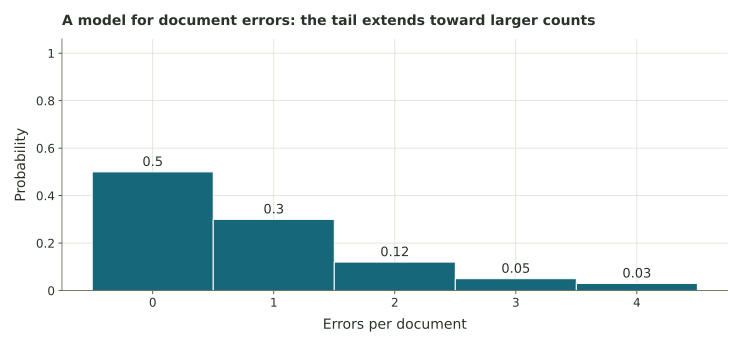

From counts to probability
Use survey and count data to connect sampling, fractions, graph choice, and probability.
Getting started
Five investigations use surveys, counts, graphs, and probability tables.
Enter fractions or decimals for proportions (three decimal places if needed). Use whole numbers for counts.
Identifying the sample
Each survey reaches a different group. Identify whom it aims to describe and whom it actually reaches.
Hospital wait times
A hospital uses patients from one Tuesday to estimate average ER wait time for the entire month.
Ballot poll
A polling organization selects 1,000 registered voters at random from the registered-voter population.
Coffee shop hours
A coffee shop asks only Monday-morning customers whether the shop should open earlier.
Counting the answers
Count how many times each sibling number occurs.
2, 0, 1, 3, 1, 2, 0, 1, 1, 2, 3, 0, 1, 2, 1, 0, 2, 1
| Siblings | Your frequency |
|---|---|
| 0 | |
| 1 | |
| 2 | |
| 3 |
Finding relative frequencies
2, 0, 1, 3, 1, 2, 0, 1, 1, 2, 3, 0, 1, 2, 1, 0, 2, 1
Use denominator 18 for every share. Here, “more than one” includes the answers 2 and 3.
| Siblings | Your relative frequency |
|---|---|
| 0 | |
| 1 | |
| 2 | |
| 3 |
Choosing a graph and counting bins
Employee transportation
Twenty employees report one usual travel method: car 10, bus 4, bike 3, walk 3.
Volunteer ages
22, 25, 31, 28, 35, 22, 29, 40, 33, 27, 25, 38, 30, 26, 42, 23, 31, 29, 35, 24, 27, 33, 28, 36
| Age bin | Your frequency |
|---|---|
| [20,25) | |
| [25,30) | |
| [30,35) | |
| [35,40) | |
| [40,45) |
Completing a distribution
Complete each probability distribution and check its total.
Repair a distribution
The four probabilities are 0.15, 0.30, 0.25, and p.
Errors in a document
| Errors | Probability |
|---|---|
| 0 | .50 |
| 1 | .30 |
| 2 | .12 |
| 3 | .05 |
| 4 | .03 |

Check your numerical answers and review your written explanations before printing.